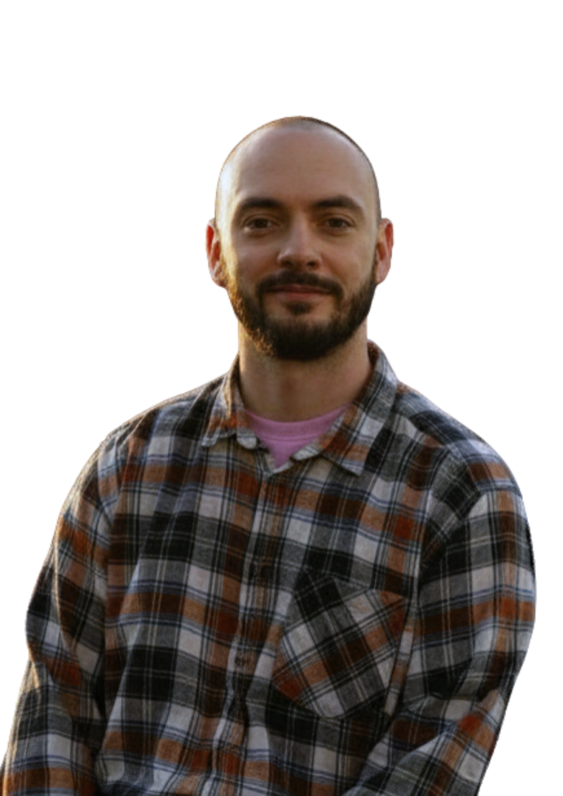

QA between expectations and reality:
the ideal candidate in 2026
Evenimentul dedicat studenților, juniorilor și profesioniștilor curioși despre QA, AI și industria tech din Moldova.
QA Spring Meetup este un eveniment comunitar organizat de QA Moldova, dedicat celor care vor să înțeleagă mai bine lumea testării software — și mai ales ce înseamnă candidatul ideal în 2026.
Vom reuni speakeri din companii de top, un panel de discuții cu invitați din industrie, și un workshop practic pentru a-ți pune cunoștințele în aplicare.
90 de minute cu prezentări, panel discussion și workshop practic.
Profesioniști din industrie gata să împartă din experiența lor reală.

O conversație deschisă despre candidatul ideal în 2026 — cu invitați din industrie.
Subiecte relevante pentru 2026, alese special pentru audiența noastră.
Evenimentul are loc în inima comunității studențești din Chișinău.
Sâmbătă, 25 Aprilie 2026
Ușile se deschid la 10:45, Start 11:00
Blocul 3 (FCIM), Aula 3-3
Intrare cu permis de acces — detalii după înregistrare
Wi-Fi disponibil pentru workshop
Proiector + microfoane pentru panel
Accesibil cu transportul public
Troleibuz: 3, 22 — stația UTM
Gratuită, cu înregistrare prealabilă
Confirmare prin email după înregistrare
Locurile sunt limitate. Înregistrează-te gratuit și asigură-ți locul la cel mai tare eveniment QA din Moldova.
✦ Înregistrare Gratuită🔐 Nu necesită cont. Date confidențiale, nu trimitem spam.